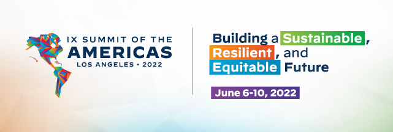
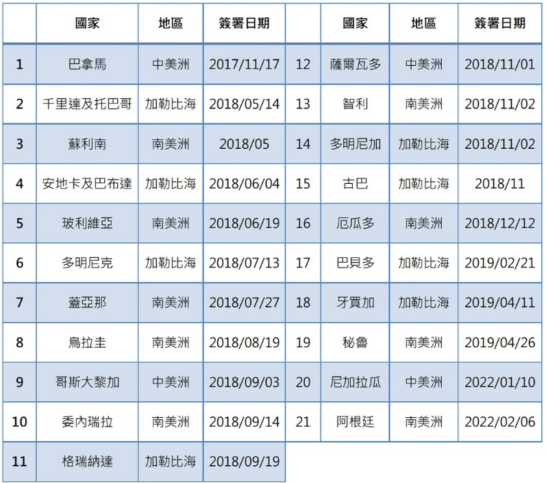
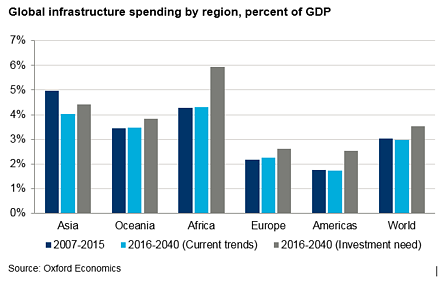

收录于合集


从美洲峰会看美中新冷战
向骏
2022年美洲峰会（2022 Summit of the Americas）6月6日将在洛杉矶举行，主题为“为西半球建构可持续、有韧性、公正性的未来”（Building a Sustainable, Resilient, and Equitable Future for our hemisphere）。美洲峰会是北美、南美、中美和加勒比国家领导人在整个半球范围内的会议，今年为第九届。第一届峰会于1994年12月9~11日在迈阿密举行，当时风华正茂的柯林顿（Bill Clinton）总统正在享受后冷战初期美国独霸全球的风光，世贸组织于1993年12月15日完成乌拉圭回合谈判，次年1月1日北美自由贸易协定（NAFTA）也正式生效，柯林顿因此在会中野心勃勃地提出“美洲自由贸易区”（Free Trade Area of the Americas，FTAA）概念，并期待在2005年完成。
现任美洲理事会（Council of the Americas）副总裁的Eric Farnsworth 5月初在《美洲季刊》发表题为《拜登的峰会应当唤起1994精神》文章，曾任职白宫、国务院、美国贸易代表署的他以亲身经历回忆该次峰会的成就及影响，例如巴西代理总统佛郎哥（Itamar Franco）及候任总统卡多索（Fernando Henrique Cardoso）联袂出席就可算是创举。但他也语重心长地提醒“当许多人欢迎和美国建立更紧密关系时，其他人则寻求替代伙伴，也就是正在区域内扩张存在的中国。”28年来美国与拉美关系至少有以下三个层面的重大演变。
01 地缘政治层面
从地缘政治层面看，本世纪初高涨的“粉红浪潮”导致2013年11月18日美国国务卿凯瑞（John Kerry）在美洲国家组织（OAS）致辞中宣告“门罗主义时代已结束”（The era of the Monroe Doctrine is over），并表示新的政策将视对方为平等伙伴、分担责任、不拘泥于意识形态、增进共享的价值和利益。然而根据《纽约时报》今年四月下旬的统计，大约三分之一的美国驻拉丁美洲和加勒比地区的大使职位悬缺，包括区域内最大经济体巴西和美洲国家组织的大使。看来美国并未记取教训。
02 地缘经济层面
从地缘经济层面看，首先是2018年10月1日美墨加三国正式同意美国－墨西哥－加拿大协议（USMCA）条款，不仅取代了北美自由贸易协定，其中更包含了针对中国而设计的“毒丸条款”。其次是2020年9月12日美国总统特朗普（Donald Trump）提名的白宫国家安全委员会西半球拉美事务高级主管毛里西奥·克拉韦尔-卡罗内（Mauricio Claver- Carone）-参选新任美洲开发银行行长，当天举行的行长改选表决结果卡罗内获30票支持，另16票弃权，阿根廷、墨西哥、智利、尼加拉瓜、千里达和多巴哥等国和欧盟投弃权票表达对美国政府打破惯例提名美官员参选的不满。联名写信表示抗议的前总统包括巴西前总统卡多索（Fernando Silva Cardoso）、智利前总统拉哥斯（Ricardo Lagos）、乌拉圭前总统桑吉内提（Julio María Sanguinetti）、哥伦比亚前总统桑托斯（Juan Manuel Santos）以及墨西哥前总统塞迪略（Ernesto Zedillo）。
03 国际关系层面
从国际关系层面看，主要变化在于从后冷战时期进入新冷战时期。2006年初美洲对话（Inter- American Dialogue）总裁哈金（Peter Hakim）在《外交》杂志（ Foreign Affairs ）一篇题为《美国正失去拉丁美洲吗?》的文章中警告“许多拉美人士视中国为美国霸权的替代品”。同年4月美国国务院主管拉美事务的助理国务卿夏侬（Thomas Shannon）访问中国并与外交部拉美司司长曾钢会晤，这不仅是中美双方拉美政策负责人首次见面，更隐含双方承认中国、美国和拉美的“三边”关系。2011年社科院拉美所和威尔逊中心（Woodrow Wilson International Center）共同出版了《中国、拉美和美国:新三角》（ China, Latin America, and the United States: The New Triangular ），此一三边关系算是正式成立。
今年4月28日，阿根廷托尔瓜托迪特利亚大学（Universidad Torcuato Di Tella）国关教授Juan Gabriel Tokatlian在题为《拉美不想要新冷战》（ Latin America Doesn’t Want a New Cold War ）的文章中抨击:美国再次依其传统的支持或反对我们（with us or against us）、民主或专制（democracy or autocracy）二分法诱导拉美国家“选边”（choose a side）。其实诱导（induce）算是客气的说法，强迫（coerce）恐怕才是事实。以美国和古巴关系为例，1992年以来，联合国大会每年都通过决议要求美国终止对古巴的经济禁运，唯一例外是2020年因新冠疫情未对该问题进行表决。2021年表决结果184国赞成，美国和以色列一如既往投反对票，哥伦比亚、乌克兰和巴西弃权。
3.1 拉美被迫选边
冷战结束后拉美不再拥有具体威胁美国国家安全的工具，美国与拉美关系的好坏系于领导人一念之间。以欧巴马（Barack Obama）为例，2015年4月11日在巴拿马举行的第七届美洲峰会上，古巴国务会议主席劳尔‧卡斯特罗（Raúl Castro）成为21年来首位出席的国家领导人，更难得的是在稍后的正式会谈欧巴马和他相互递出橄榄枝，共同推进历史性和解。欧巴马说：“古巴总统现在和我同在一起，就是一个历史的场合。冷战年代早已结束，美国不再是对古巴和地区历史的囚徒。”
再以特朗普为例，他认为欧巴马古巴政策错误，不仅下令严格执行美国公民前往古巴旅游的禁令更将其列为“暴政三驾马车”（Troika of Tyranny）之一。拜登（Joseph Biden）在任副总统8年期间曾访问拉美16次，可算是“知拉派”。但美国国务院4月27日已表示此次峰会聚焦在民主伙伴的交流，因此不邀请古巴、尼加拉瓜与委内瑞拉参与。白宫发言人5月2日表示国务卿已再次重申对委内瑞拉2015年民主选举国会的支持，瓜伊多（Guaidó ）仍为官方支持的临时总统，看来拜登仍持续特朗普的拉美政策。以下探讨拉美主要经济体和美国的关系。
先看巴西 。 巴西总统博索纳罗（Jair Bolsonaro）在俄乌冲突爆发前的2月16日不顾美国反对访问俄罗斯，白宫和美国国务院因此都发表声明抨击。博索纳罗访俄期间两国外交部长和国防部长举行了首次“2+2会谈”。2月27日，博索纳罗再次强调，在俄乌冲突上巴西不站队，坚持中立立场，尽一切可能寻求解决方案。当天巴西常驻联合国大使对西方国家加码施压俄罗斯的做法表示不认同。经济部长也毫不讳言地表示，巴西宪法不允许巴西支援未经联合国批准的制裁，将俄罗斯从国际货币基金组织除名会引发更激烈的经贸战。难怪拜登上任15月仍拒绝和他通电话。
今年十月大选博索纳罗最大的挑战者是5月7日已正式宣布代表劳工党参选的前总统鲁拉（Luiz Inácio Lula da Silva），鲁拉曾批评：“美国有很多种政治手段，拜登大可以避免战争爆发，而非煽动。拜登可以搭机飞往莫斯科和普亭谈谈。”看来不论谁当选总统，拜登想搞定巴西恐非易事。
次看墨西哥 。2018 年 12 月 1 日就职的总统罗培兹（Andrés Manuel López Obrador），直到2020年7月8~9日才把首次出国访问献给特朗普，他虽强调访美是庆祝7月1日生效的美国-墨西哥- 加拿大协定（USMCA），但加拿大总理杜鲁道（Justin Trudeau）托辞日程排不开婉拒出席，真正原因是他觉得墨西哥在协定谈判过程中“出卖”了加方。
尽管罗培兹总统在例行的晨间记者会上表示4月29日他和拜登通话的气氛非常好，但5月7日他访问危地马拉时却批评：“美国已经批准了300亿美元投入乌克兰战争当中，而自前总统特朗普以来，我们一直在等待，要求他们捐赠40亿美元，但截至今天，什么都没有”。稍早墨西哥已在联合国拒绝对俄罗斯实施制裁，此番只是再次重申希望“保持中立”。
末看阿根廷 。为庆祝中阿建交50周年， 阿根廷总统费南德斯（Alberto Fernández）成为拉美两位出席北京冬奥的国家领导人，其目的在寻求中国对阿家经济优先事项的支持。尽管已在联合国大会投下赞成票、公开谴责俄罗斯，但阿根廷外交部长卡菲罗（Santiago Cafiero）仍表示，阿根廷不认为其在乌俄战争中有办法提供任何促进和平、挽救生命的机制。费南德斯总统的北京之行使阿根廷成为第21个签署“一带一路”合作谅解备忘录的拉美国家。（详见下表）
表1 拉丁美洲国家与中国签署“一带一路”合作备忘录一览表

资料来源：杨建平，中国与阿根廷在主权议题上相互取暖，“一带一路”在拉美获得重大突破，《关键评论》，2022年3月17日。https://www.thenewslens.com/article/163040
特别值得关注的是 智利 。不少学者将智利2019年动乱归咎于皮诺契（Augusto Pinochet）执政时期的新自由主义政策。美国瑞奇蒙大学（University of Richmond）政治学教授普里布林（Jennifer Pribble）认为：“这是一个快速但不平等的经济增长的故事；政府不愿担当其监管和社会政策角色的故事；以及政治阶层不愿改变国家经济和社会模式的故事。”3月11日才就任总统的博里奇（Gabriel Boric）曾谓“新自由主义生于智利也将死于智利”（Neoliberalism Was Born in Chile & Will Die in Chile），他如果在拉美再次掀起粉红浪潮恐非美国所乐见。
3.2 重建美好vs带路倡议
新冠疫情 和 俄乌冲突 是影响此次峰会的重大国际事件。由于两者均加深拉美地区间的不平等程度，联合国拉美经委会执行主席巴尔塞纳（Alicia Bárcena）坦言，拉美实现2030可持续发展议程进展甚微。更值得关注的是两者均对美、中与拉美关系产生相当影响。巴尔塞纳认为中国对抗疫情和扶贫经验值得拉美地区国家学习，中国对拉美的疫苗外交超越美国甚多更无庸赘言。但俄乌冲突似乎已再次引发美、中龃龉。
5月2日，清华大学国际问题研究院院长阎学通教授在《外交》杂志发表题为《中国的乌克兰难题》（ China’s Ukraine Conundrum ）的文章指出，一方面俄乌战争给中国带来了许多压力，甚至使中国陷入了一种战略困境；另一方面中国清楚美国在俄乌问题上拖垮俄罗斯的战略目标。不论中国是否支持俄罗斯，美国对华遏制的整体战略都不会改变。所以中国只能坚持平衡策略，延续和平发展道路，避免因选边站队而带来重大风险。
3.3 耐心资本有助拉美基础建设
冷战期间拉美地区堪称美-苏/俄纵横捭阖的“第二战场”，它既是美苏开展意识形态与政治经济发展模式对抗的前沿阵地，也是“后冷战”时代美中竞争的地缘杠杆。因此，美国势必利用美洲峰会在拉美开辟新冷战的“第二战场”。从去年美国国会提出的《重建美好法》（Build Back Better Act）法案到今年已在两院顺利过关的跨党派《美国竞争法案》（America COMPETES Act）主要目标都在减少对中国进口商品的依赖。但在拉丁美洲中国还是有相当比较优势。
根据牛津经济学（Oxford Economics）统计，拉丁美洲基础建设投资和GDP的比例是全球最低的地区（见下图），因此提供了中国巨大商机。根据华府智库威尔逊中心（Wilson Center)）研究员卡普兰（Stephen B. Kaplan）题为《耐心资本的崛起:中国全球金融的政治经济学》（ The Rise of Patient Capital: The Political Economy of Chinese Global Finance ）的报告，“带路倡议“（Belt and Road Initiative, BRI）在拉美“自然延伸”的主要特色之一就是“耐心资本”。

图一：全球各洲基础建设投资和GDP比例图
所谓“耐心资本”（Patient Capital）泛指对投资风险有较高承受力且允许较长投资回收期的资本，期待投资报酬率介于5~10%，而非创投基金要求的35%。北京大学新结构经济学研究中心教授林毅夫和世界银行前资深经济学家王燕共同指出：“为了提高新兴市场在基础设施投资中的份额，世界需要一些愿意承担这些早期风险并等待更长时间来让项目成熟的股权投资者来提供更多的耐心资本。”
04 结语
习近平主席曾多次表示：“太平洋足够大，容得下中、美两国”，唯一例外的是2018年6月接见美国国防部长吉姆·马蒂斯（Jim Mattis）时还特别加了“和其他国家”。因为马蒂斯在同年5月30日才把原“美国亚太指挥部”（USPACOM）改名为“美国印太指挥部”（United States Indo-Pacific Command，USINDOPACOM）。从当前国际局势变化观之，2011年由墨西哥、哥伦比亚、祕鲁和智利成立的“拉美太平洋联盟”（Pacific Alliance）应该是值得中国争取的“其他国家”，因为当时四个国家的右翼总统有三个国家都已政党轮替为左翼，另哥伦比亚今年5月29日大选左翼候选人也呼声甚高。
尽管美国已表示不邀请古巴、尼加拉瓜与委内瑞拉国家领导人参加峰会，但不表示其他国家一定会出席。5月10日墨西哥总统罗培兹就表示，如果美国执意将古巴等国家排除在外，他将不出席本届美洲峰会。另巴西总统博索纳罗也告诉助手不打算参加峰会，看来不到最后一刻无法确认多少国家领导人会出席。
作者：向骏（Antonio C. Hsiang），美国纽约大学拉丁美洲研究硕士，美国克莱蒙大学政治经济学硕士、政治学博士。现任智利国家政治及战略研究学院（ANEPE）教授。曾主编《美中权力转移: 理论与实务》(江苏人民出版社，2010年)等七本书，最新主编书籍如下: Taiwan’s Relations with Latin America: A Strategic Rivalry between the United States, China, and Taiwan, coedited with Li He, Lexington Books, 2021。
来源：学人原创专栏
欢迎读者向平台荐稿，符合 下列条件之一 将优先转载：
1. 发表期刊为中文核心期刊或作者本人曾在中文核心期刊发表过文章
2. 原创稿件具有较强的理论深度与现实关怀
3. 作者本人出版专业著作的内容摘编
4. 未被其他网络平台转载过的文章
投稿邮箱： guozhengxueren@163.com
排版 | 王佳怡
文章来源于学人原创专栏，文章观点不代表本平台观点。